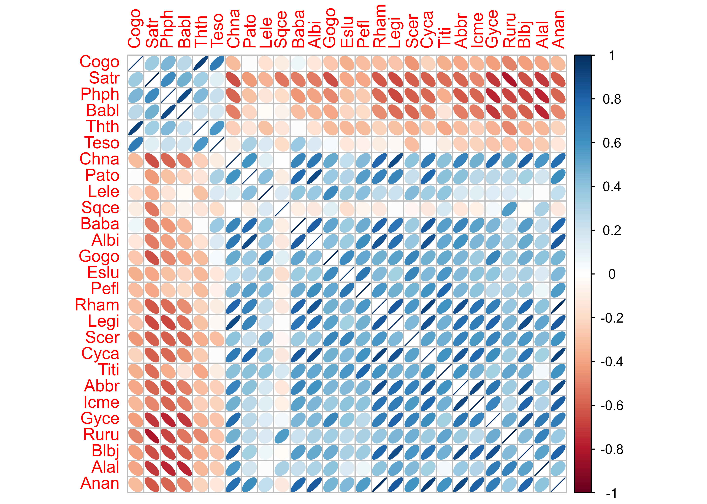
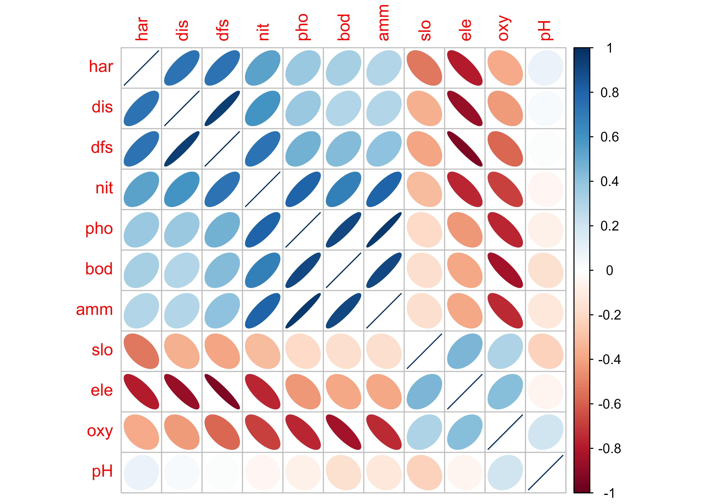
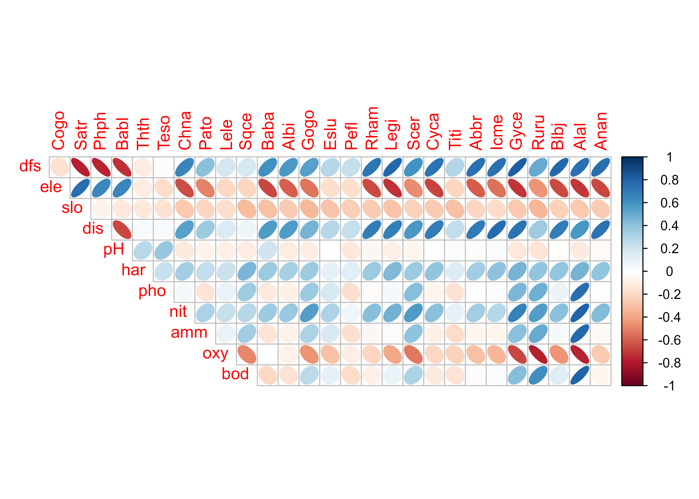
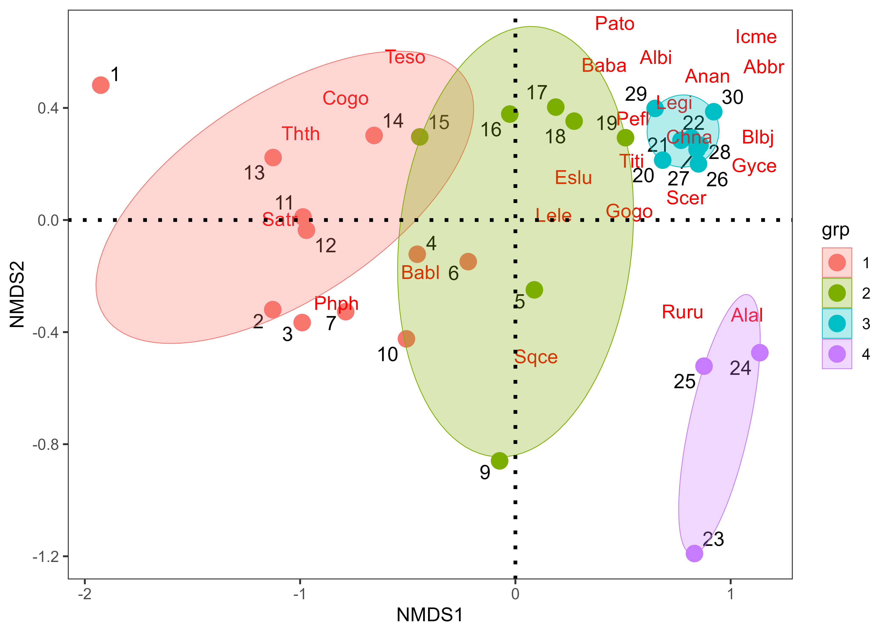
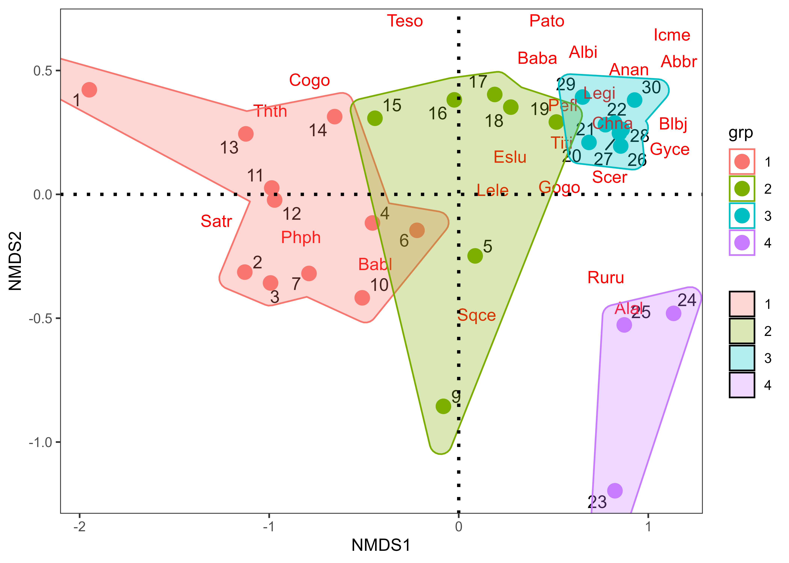
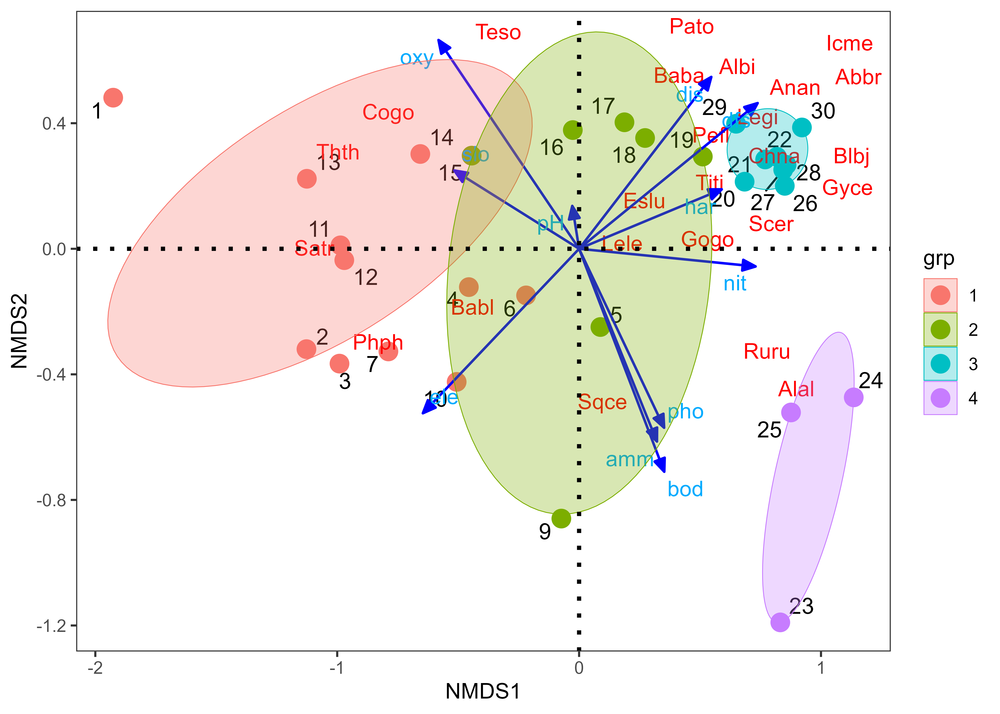

library(vegan) # Para el NMDS y extracción de coord. ambientales
library(ggbiplot) # Para la realización de las figuras
library(ggsci) # Complemento del ggplot2 en las figuras
library(ggforce) # Complemento del ggplot2 en las figuras
library(concaveman) # Complemento del ggplot2 en las figuras
library(ggplot2) # Paquete gráfico
library(reshape2) # Complemento del ggplot2 en las figuras
library(ggrepel) # Complemento del ggplot2 en las figuras
library(corrplot) # Figuras de elipses
library(kableExtra) # Para la edición de las tablas
library(readxl)Taller5.2 NMDS Peces Francia

Exploración gráfica multivariada - base peces ríos Doubs de Francia
Materiales requeridos para los talleres en clase
En los siguientes enlaces se podrán descargar archivos comprimidos de los dos talleres donde se pueden aplicar procedimientos de nàlisis de componentes principales en RStudio, con un caso guiado de quebradas del PNN Tayrona y variables ambientales asociadas (📰 Materiales del Taller 4.2_pca_PNNT).
Nota: una vez se descarguen los materiales, se requiere descomprimirlos antes de realizar cualquier procedimiento y seguir las orientaciones del docente para realizar los ejercicios requeridos. Al final de cada taller hay un cuestionario que servirá para afianzar el entrenamiento sobre esta temática.
Diapositivas en vivo - Slides.com

Objetivo de la actividad:
Datos tomados de Verneaux (1973) y por Verneaux et al. (2003) En: Borcard et al. (2011, 2018). Se utilizan especies de peces para caracterizar zonas ecológicas a lo largo de ríos y arroyos europeos, empleando a estos organismos como indicadores biológicos de los cuerpos de agua. Las condiciones ecológicas en los ríos van desde aguas relativamente vírgenes, bien oxigenadas y oligotróficas hasta aguas eutróficas y sin buenos niveles de oxígeno. Los datos se han recopilado en 30 sitios a lo largo del río Doubs, que corre cerca de la frontera entre Francia y Suiza en las montañas del Jura. La primera base de datos (DoubsSpe.csv) contiene abundancias codificadas de 27 especies de peces y la segunda base de datos (DoubsEnv.csv) contiene 11 variables ambientales relacionadas con la hidrología, geomorfología y química del río. Para más detalles sobre el procedimiento de muestreo se requiere revisar el capítulo introductorio de Borcar et al. (2018).
Referencias bibliográficas de apoyo.
Borcard et al. (2018) Numerical ecology with R Documento de base en el que se encuentran parte de los cálculos realizados.
Perifiton de un río de Montaña - Osorio et al. 2014 Valoración del proceso sucesional de microalgas perifíticas el tramo medio del río Gaira - Santa Marta.
Invertebrados de un río de Montaña - Rodríguez-Barrios et al. 2011 Estudio de diferentes atributos comunitarios en invertebados acuáticos del río Gaira - Santa Marta.
Descomposición de Hojarásca en Ríos - Eyes et al. 2011 Trabajo realizado en el bosque de ribera del río Gaira - Santa Marta.
Nutrientes de la hojarásca - Fuentes y Rodríguez. 2011 Otro trabajo realizado en el bosque de ribera del río Gaira - Santa Marta.
Análisis de Volnerabilidad a Inundaciones - Noriega et al. 2011 Valoración de riesgo a inundaciones en la parte baja del río Gaira - Santa Marta.
Procedimiento de la exploración
Cargar librerías requeridas
Cargar la base
malezas.csvCorrer el NMDS con una distancia binaria (Jaccard)
Realizar las opciones gráficas con las librerías
"vegan"y"ggplot2".
Cargar las librerías requeridas
Cargar las bases de datos biológica y ambiental
# Base de especies
spe <- read_xlsx("datos_nmds.xlsx", sheet = "DoubsSpe") |>
dplyr::select(-1) |>
as.data.frame()
rownames(spe) <- spe$Sites
head(spe) Cogo Satr Phph Babl Thth Teso Chna Pato Lele Sqce Baba Albi Gogo Eslu Pefl
1 0 3 0 0 0 0 0 0 0 0 0 0 0 0 0
2 0 5 4 3 0 0 0 0 0 0 0 0 0 0 0
3 0 5 5 5 0 0 0 0 0 0 0 0 0 1 0
4 0 4 5 5 0 0 0 0 0 1 0 0 1 2 2
5 0 2 3 2 0 0 0 0 5 2 0 0 2 4 4
6 0 3 4 5 0 0 0 0 1 2 0 0 1 1 1
Rham Legi Scer Cyca Titi Abbr Icme Gyce Ruru Blbj Alal Anan
1 0 0 0 0 0 0 0 0 0 0 0 0
2 0 0 0 0 0 0 0 0 0 0 0 0
3 0 0 0 0 0 0 0 0 0 0 0 0
4 0 0 0 0 1 0 0 0 0 0 0 0
5 0 0 2 0 3 0 0 0 5 0 0 0
6 0 0 0 0 2 0 0 0 1 0 0 0# tabla con los datos
head(spe) %>%
dplyr::select(1:10) %>%
kbl(booktabs = TRUE, longtable = FALSE) %>%
kable_classic(full_width = F) %>%
kableExtra::row_spec(0, bold = TRUE)| Cogo | Satr | Phph | Babl | Thth | Teso | Chna | Pato | Lele | Sqce |
|---|---|---|---|---|---|---|---|---|---|
| 0 | 3 | 0 | 0 | 0 | 0 | 0 | 0 | 0 | 0 |
| 0 | 5 | 4 | 3 | 0 | 0 | 0 | 0 | 0 | 0 |
| 0 | 5 | 5 | 5 | 0 | 0 | 0 | 0 | 0 | 0 |
| 0 | 4 | 5 | 5 | 0 | 0 | 0 | 0 | 0 | 1 |
| 0 | 2 | 3 | 2 | 0 | 0 | 0 | 0 | 5 | 2 |
| 0 | 3 | 4 | 5 | 0 | 0 | 0 | 0 | 1 | 2 |
# Base de ambientales
env <- read_xlsx("datos_nmds.xlsx", sheet = "DoubsEnv") |>
dplyr::select(-1) |>
as.data.frame()
rownames(env) <- env$Sites
# tabla con los datos
head(env) %>%
dplyr::select(1:10) %>%
kbl(booktabs = TRUE, longtable = FALSE) %>%
kable_classic(full_width = F) %>%
kableExtra::row_spec(0, bold = TRUE)| dfs | ele | slo | dis | pH | har | pho | nit | amm | oxy |
|---|---|---|---|---|---|---|---|---|---|
| 0.3 | 934 | 48.0 | 0.84 | 7.9 | 45 | 0.01 | 0.20 | 0.00 | 12.2 |
| 2.2 | 932 | 3.0 | 1.00 | 8.0 | 40 | 0.02 | 0.20 | 0.10 | 10.3 |
| 10.2 | 914 | 3.7 | 1.80 | 8.3 | 52 | 0.05 | 0.22 | 0.05 | 10.5 |
| 18.5 | 854 | 3.2 | 2.53 | 8.0 | 72 | 0.10 | 0.21 | 0.00 | 11.0 |
| 21.5 | 849 | 2.3 | 2.64 | 8.1 | 84 | 0.38 | 0.52 | 0.20 | 8.0 |
| 32.4 | 846 | 3.2 | 2.86 | 7.9 | 60 | 0.20 | 0.15 | 0.00 | 10.2 |
# Suprimir el sitio 8, por no presentar abundancias de especies
spe = spe[-8,]
env = env[-8,]# Transformación de los datos de abundancia
spe.h = decostand(spe,"hellinger") # Linealizar los datos de abundancia
# tabla con los datos
head(round(spe.h,2)) %>%
dplyr::select(1:10) %>%
kbl(booktabs = TRUE, longtable = FALSE) %>%
kable_classic(full_width = F) %>%
kableExtra::row_spec(0, bold = TRUE)| Cogo | Satr | Phph | Babl | Thth | Teso | Chna | Pato | Lele | Sqce |
|---|---|---|---|---|---|---|---|---|---|
| 0 | 1.00 | 0.00 | 0.00 | 0 | 0 | 0 | 0 | 0.00 | 0.00 |
| 0 | 0.65 | 0.58 | 0.50 | 0 | 0 | 0 | 0 | 0.00 | 0.00 |
| 0 | 0.56 | 0.56 | 0.56 | 0 | 0 | 0 | 0 | 0.00 | 0.00 |
| 0 | 0.44 | 0.49 | 0.49 | 0 | 0 | 0 | 0 | 0.00 | 0.22 |
| 0 | 0.24 | 0.30 | 0.24 | 0 | 0 | 0 | 0 | 0.38 | 0.24 |
| 0 | 0.38 | 0.44 | 0.49 | 0 | 0 | 0 | 0 | 0.22 | 0.31 |
1) Exploración gráfica
# Matriz de correlación para abundancias de especies
M1 <- cor(spe.h) # Matriz de Correlación (M)
# round(M1,2)# Elipses con colores
corrplot(M1, method = "ellipse") # Figura de correlaciones con elipses
# Matriz de correlación para las variables ambientales
M2 <- cor(env) # Matriz de Correlación (M)
# round(M2,2)# Elipses con colores
corrplot(M2, method = "ellipse", order = "AOE") # Figura de correlaciones con elipses
# Matriz de correlaciones de datos biológicos vs. los ambientales
M3 <- cor(env, spe.h)corrplot(M3, method = "ellipse", type = "upper")
2) Generación de factores
Este procedimiento es válido para los casos en que no se cuenta con un factor o variable agrupadora, como ocurre con estos datos (?fig-fig6). A continuación se formaran 4 grupos insertando a la variable agrupadora o factor gr (Tabla 1.1), con el método de clasificación jerárquico de ward (que se verá en el tema de clasificación con clúster), teniendo en cuenta un agrupamiento de las localidades, descrito en el libro de Borcard et al. (2018).
datos.w <- hclust(vegdist(spe), "ward.D") # Grupos con Cluster con ward
gr <- cutree(datos.w, k = 4) # Generar 4 grupos (factor gr)
datos.gr=data.frame(gr,spe) # Base de datos con el factor agrupador
datos.gr$gr=as.factor(datos.gr$gr) # Crear la columna gr como factor
# Presentación de la tabla con las 10 primeras filas
datos.gr[1:10,] %>%
kbl(booktabs = F) %>%
kable_classic(full_width=F, html_font = "Cambria")| gr | Cogo | Satr | Phph | Babl | Thth | Teso | Chna | Pato | Lele | Sqce | Baba | Albi | Gogo | Eslu | Pefl | Rham | Legi | Scer | Cyca | Titi | Abbr | Icme | Gyce | Ruru | Blbj | Alal | Anan | |
|---|---|---|---|---|---|---|---|---|---|---|---|---|---|---|---|---|---|---|---|---|---|---|---|---|---|---|---|---|
| 1 | 1 | 0 | 3 | 0 | 0 | 0 | 0 | 0 | 0 | 0 | 0 | 0 | 0 | 0 | 0 | 0 | 0 | 0 | 0 | 0 | 0 | 0 | 0 | 0 | 0 | 0 | 0 | 0 |
| 2 | 1 | 0 | 5 | 4 | 3 | 0 | 0 | 0 | 0 | 0 | 0 | 0 | 0 | 0 | 0 | 0 | 0 | 0 | 0 | 0 | 0 | 0 | 0 | 0 | 0 | 0 | 0 | 0 |
| 3 | 1 | 0 | 5 | 5 | 5 | 0 | 0 | 0 | 0 | 0 | 0 | 0 | 0 | 0 | 1 | 0 | 0 | 0 | 0 | 0 | 0 | 0 | 0 | 0 | 0 | 0 | 0 | 0 |
| 4 | 1 | 0 | 4 | 5 | 5 | 0 | 0 | 0 | 0 | 0 | 1 | 0 | 0 | 1 | 2 | 2 | 0 | 0 | 0 | 0 | 1 | 0 | 0 | 0 | 0 | 0 | 0 | 0 |
| 5 | 2 | 0 | 2 | 3 | 2 | 0 | 0 | 0 | 0 | 5 | 2 | 0 | 0 | 2 | 4 | 4 | 0 | 0 | 2 | 0 | 3 | 0 | 0 | 0 | 5 | 0 | 0 | 0 |
| 6 | 1 | 0 | 3 | 4 | 5 | 0 | 0 | 0 | 0 | 1 | 2 | 0 | 0 | 1 | 1 | 1 | 0 | 0 | 0 | 0 | 2 | 0 | 0 | 0 | 1 | 0 | 0 | 0 |
| 7 | 1 | 0 | 5 | 4 | 5 | 0 | 0 | 0 | 0 | 1 | 1 | 0 | 0 | 0 | 0 | 0 | 0 | 0 | 0 | 0 | 0 | 0 | 0 | 0 | 0 | 0 | 0 | 0 |
| 9 | 2 | 0 | 0 | 1 | 3 | 0 | 0 | 0 | 0 | 0 | 5 | 0 | 0 | 0 | 0 | 0 | 0 | 0 | 0 | 0 | 1 | 0 | 0 | 0 | 4 | 0 | 0 | 0 |
| 10 | 1 | 0 | 1 | 4 | 4 | 0 | 0 | 0 | 0 | 2 | 2 | 0 | 0 | 1 | 0 | 0 | 0 | 0 | 0 | 0 | 0 | 0 | 0 | 0 | 0 | 0 | 0 | 0 |
| 11 | 1 | 1 | 3 | 4 | 1 | 1 | 0 | 0 | 0 | 0 | 1 | 0 | 0 | 0 | 0 | 0 | 0 | 0 | 0 | 0 | 0 | 0 | 0 | 0 | 0 | 0 | 0 | 0 |
3) Ordenación NMDS con el paquete ggplot2
Realización nmds con el paquete vegan, para gererar las coordenadas de los sitios, de los grupos, de las especies y de las variables ambientales.
# Correr el Escalamiento - nMDS
spe.mds <- metaMDS(spe.h, distance = "bray", trace = FALSE)
# names(spe.mds)3.1 Coordenadas de los sitios y del factor “coord.sit”
coord.sit <- as.data.frame(scores(spe.mds$points)) # Coordenadas de los sitios
coord.sit$sitio <- rownames(coord.sit) # Crear una columna con nombres de los sitios
coord.sit$grp <- datos.gr$gr # Adicionar columna de grupos por especie
colnames(coord.sit)<- c("NMDS1","NMDS2","sitio","grp")
head(coord.sit) NMDS1 NMDS2 sitio grp
1 -1.94892662 0.4222024 1 1
2 -1.12864145 -0.3139039 2 1
3 -0.99286110 -0.3576944 3 1
4 -0.45515376 -0.1154306 4 1
5 0.08657542 -0.2484586 5 2
6 -0.22019857 -0.1452315 6 14.2 Coordenadas de las especies “coord.esp”
# Coordenadas de especies "coord.esp"
coord.esp <- as.data.frame(scores(spe.mds, "species")) # Coordenadas de las especies del nMDS
coord.esp$especies <- rownames(coord.esp) # Insertar columna con nombres de las especies
head(coord.esp) NMDS1 NMDS2 especies
Cogo -0.8766179 0.40940057 Cogo
Satr -1.1892483 -0.05292401 Satr
Phph -0.7419528 -0.22554207 Phph
Babl -0.5300058 -0.22674272 Babl
Thth -0.9053221 0.39134907 Thth
Teso -0.4197867 0.65742315 Teso4.3 Coordenadas de las ambientales “coord.amb”
amb = envfit(spe.mds,env)
coord.amb = as.data.frame(scores(amb, "vectors"))
coord.amb$amb <- rownames(coord.amb) # Insertar columna con nombres de las ambientales
head(coord.amb) NMDS1 NMDS2 amb
dfs 0.7389495 0.4623130 dfs
ele -0.6441840 -0.5287468 ele
slo -0.5306019 0.2122083 slo
dis 0.5460677 0.5486561 dis
pH -0.0268953 0.1449412 pH
har 0.5871377 0.2061675 har# Para los casos en los que "vectors" no funcione, aplicar:
# coord.amb = as.data.frame(amb$vectors$arrows)4.4 Figura con de elipses por concavidades - geom_mark_elipse
La Figura 1.4 muestra la ordenación de las localidades, las especes de peces y los cuatro grupos formados en la columna gr.
# 1) Figura con con elipses - geom_mark_ellipse
ggplot() +
# Sitios
geom_text_repel(data = coord.sit,aes(NMDS1,NMDS2,label=row.names(coord.sit)),
size=4)+ # Muestra el cuadro de la figura
geom_point(data = coord.sit,aes(NMDS1,NMDS2,colour=grp),size=4)+
scale_shape_manual(values = c(21:25))+
# Taxones *valores de cero para caracteres de las flechas (arrow)
geom_segment(data = coord.esp,aes(x = 0, y = 0, xend = NMDS1, yend = NMDS2),
arrow = arrow(angle=0,length = unit(0,"cm"),
type = "closed"),linetype=0, size=0,colour = "red")+
geom_text_repel(data = coord.esp,aes(NMDS1,NMDS2,label=especies),colour = "red")+
# Factor
geom_mark_ellipse(data=coord.sit,aes(x=NMDS1, y=NMDS2,
colour=grp,fill=after_scale(alpha(colour, 0.2))),
expand=0, size=0.2) +
geom_hline(yintercept=0,linetype=3,size=1) +
geom_vline(xintercept=0,linetype=3,size=1)+
guides(shape=guide_legend(title=NULL,color="black"),
fill=guide_legend(title=NULL))+
theme_bw()+theme(panel.grid=element_blank())
4.5 Figura con de elipses por concavidades - geom_mark_hull
La Figura 1.5 muestra como un cambio en la capa del factor, genera un agrupamiento diferente de los cuatro grupos formados en la columna gr.
ggplot() +
# Sitios
geom_text_repel(data = coord.sit,aes(NMDS1,NMDS2,label=row.names(coord.sit)),
size=4)+ # Muestra el cuadro de la figura
geom_point(data = coord.sit,aes(NMDS1,NMDS2,colour=grp),size=4)+
scale_shape_manual(values = c(21:25))+
# Taxones *valores de cero para caracteres de las flechas (arrow)
geom_segment(data = coord.esp,aes(x = 0, y = 0, xend = NMDS1, yend = NMDS2),
arrow = arrow(angle=0,length = unit(0,"cm"),
type = "closed"),linetype=0, size=0,colour = "red")+
geom_text_repel(data = coord.esp,aes(NMDS1,NMDS2,label=especies),colour = "red")+
# Factor
geom_mark_hull(data=coord.sit, aes(x=NMDS1,y=NMDS2,fill=grp,group=grp,
colour=grp),alpha=0.30) +
geom_hline(yintercept=0,linetype=3,size=1) +
geom_vline(xintercept=0,linetype=3,size=1)+
guides(shape=guide_legend(title=NULL,color="black"),
fill=guide_legend(title=NULL))+
theme_bw()+theme(panel.grid=element_blank())
4.6 Figura con vectores de especies y variables ambientales
La Figura 1.6 muestra como un cambio en la capa del factor, genera un agrupamiento diferente de los cuatro grupos formados en la columna gr.
ggplot() +
# Sitios
geom_text_repel(data = coord.sit,aes(NMDS1,NMDS2,label=row.names(coord.sit)),
size=4)+ # Muestra el cuadro de la figura
geom_point(data = coord.sit,aes(NMDS1,NMDS2,colour=grp),size=4)+
scale_shape_manual(values = c(21:25))+
# especies
geom_segment(data = coord.esp,aes(x = 0, y = 0, xend = NMDS1, yend = NMDS2),
arrow = arrow(angle=0,length = unit(0,"cm"),
type = "closed"),linetype=0, size=0,colour = "red")+
geom_text_repel(data = coord.esp,aes(NMDS1,NMDS2,label=especies),colour = "red")+
# Ambiental
geom_segment(data = coord.amb,aes(x = 0, y = 0, xend = NMDS1, yend = NMDS2),
arrow = arrow(angle=22.5,length = unit(0.25,"cm"),
type = "closed"),linetype=1, size=0.6,colour = "blue")+
geom_text_repel(data = coord.amb,aes(NMDS1,NMDS2,label=row.names(coord.amb)),colour = "#00abff")+
# Factor
geom_mark_ellipse(data=coord.sit,aes(x=NMDS1, y=NMDS2,
colour=grp,fill=after_scale(alpha(colour, 0.2))), expand=0, size=0.2) +
geom_hline(yintercept=0,linetype=3,size=1) +
geom_vline(xintercept=0,linetype=3,size=1)+
guides(shape=guide_legend(title=NULL,color="black"),
fill=guide_legend(title=NULL))+
theme_bw()+theme(panel.grid=element_blank())
Taller de entrenamiento
Objetivo: Poner en práctica los conceptos vistos en este taller, realizando las siguientes opciones realizando un NMDS que integre a las variables biológicas (taxones) y a las ambientalñes de la base seleccionada. Enviar los resultados al Teams del profesor en formato quarto.